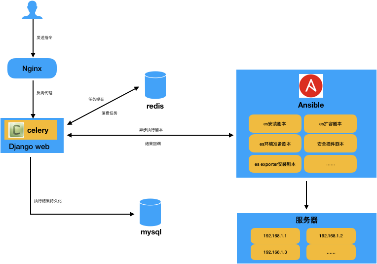
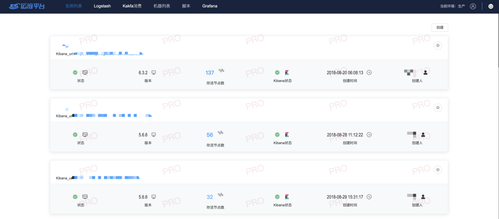
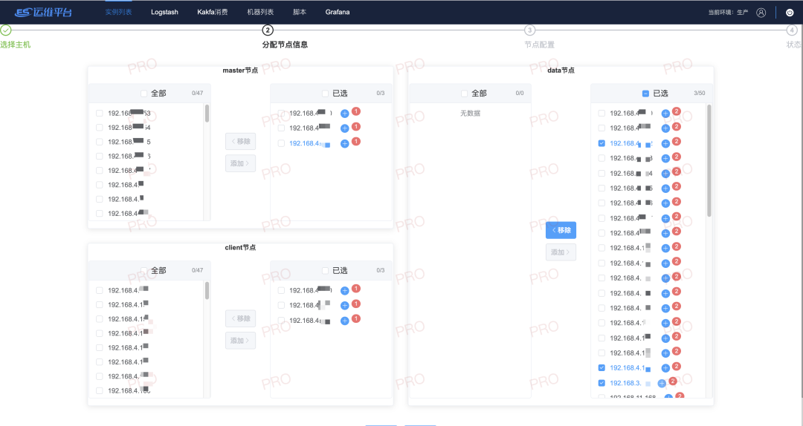
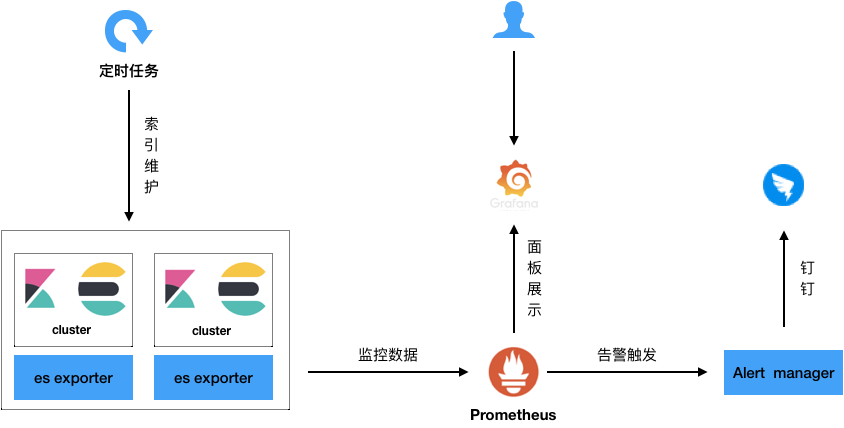
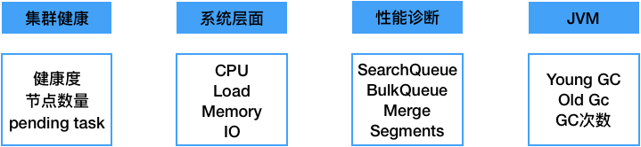
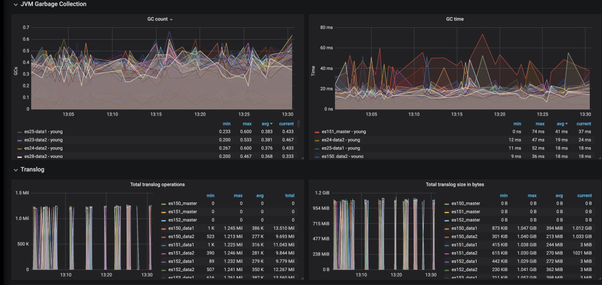
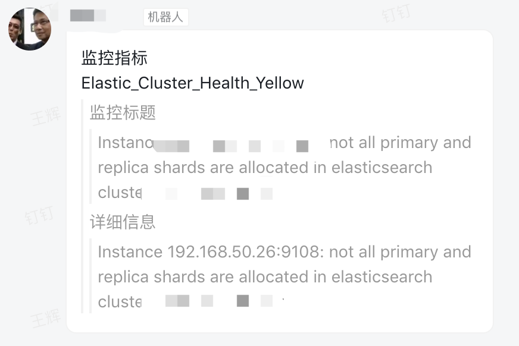
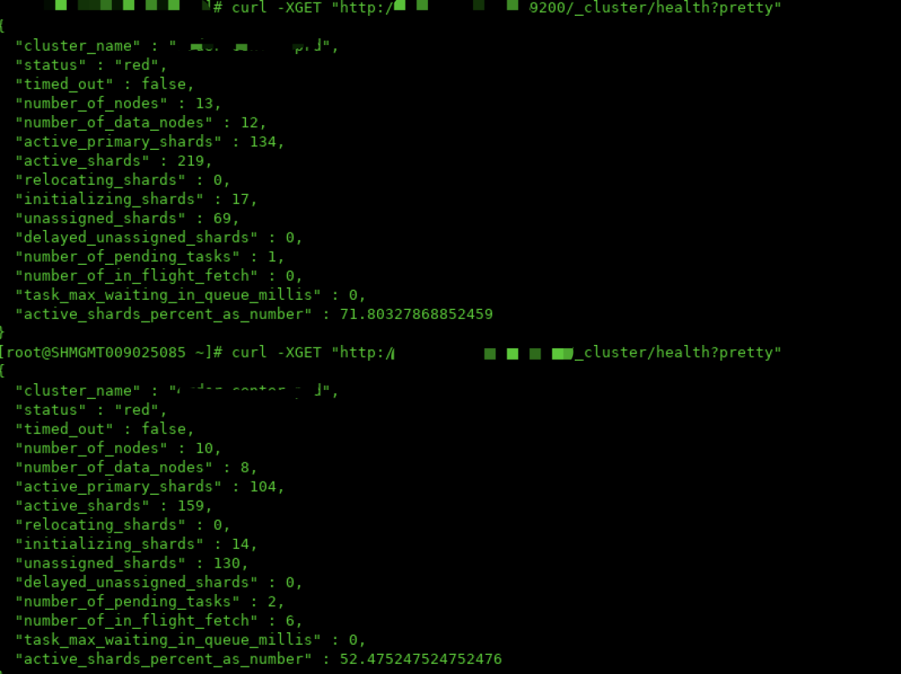

中通Elasticsearch集群运维实践
背景
中通在2015年的时候已经开始预研并在生产环境使用Elasticsearch集群，发展到现在，线上已经有几十套ES集群，集群规模小到个位数的节点，大到上百个节点，依靠原来的纯人工的方式来做维护监控操作，已经难以为继，且容易出错，亟需一套系统来简化整个运维流程，统一监控，实时告警以及索引管理。
问题
分布式集群维护困难： 搭建、集群节点间配置同步、日常维护（节点启停、服务启停、状态查看） 升级风险大： 升级过程中、升级过程后、数据量大、持续时间长、影响范围大、业务影响大 故障定位复杂： 大量服务状态需要检查、日志信息四散分布 故障恢复代价高： 重新搭建故障节点或模块、重新恢复耗时、费力
目标
稳定： 集群内不存在单点、数据保持完全同步（数据、配置、程序等） 高效： 自动化部署、升级、恢复，快速故障定位（状态查看、日志定位） 安全： 避免各个节点人工修改风险，验证后再发布到集群其他节点（灰度发布） 简单： 不依赖于过多的外部资源，使用成熟工具避免引入外部故障 灵活： 适用于多种分布式、非分布式软件，易于扩展，易于与其他产品结合
架构
基于现状问题，我们自研了一套ES的运维管理平台，经过调研，自动化运维工具决定采用Ansible，开发语言采用python， 整体平台的架构设计如下：

整个平台的核心是灵活的配置和完善的ansible剧本能力，目前平台提供了以下常用的ansbile剧本：
- elasticsearch安装剧本，包含集群的安装、节点的重启、停止功能
- elasticsearch扩容剧本，包含集群的扩容
- 机器环境准备剧本，包含安装ES前的java环境准备、系统参数设置等
- elasticsearch安全插件剧本，主要针对elasticsearch 6.8之前的版本
- es exporter安装剧本，安装ES监控数据采集的exporter
- kibana安装剧本，安装对应ES集群的kibana
- infinity安装剧本（infinity是内部的日志消费组件）
我们的ES管理运维平台界面-集群展示页面:

集群创建页面如下：

通过相对完善和灵活的控制台和剧本，目前我们已经能够很方便的在几分钟内创建一套大集群或者扩容集群。通过ES运维管理平台安装的Elasticsearch，可以得到相对完善的管理以及监控：

目前我们的监控维度包含以下几个方面：

监控的展示页面采用成熟方便的grafana。

同时，若集群发生故障，prometheus alertmanager会通过钉钉实时告警，以及时排查问题，降低影响范围和时长。

使用问题&挑战
在使用Elasticsearch的实际过程中，我们遇到了不少的问题和挑战，也总结了一些实践经验：
1. 网络抖动引起集群RED？
事故发生当天，查看集群状态为RED，使用命令查看当前的节点情况，缺失部分节点，在缺失部分节点服务器上查看进程和日志的情况，发现服务器上的节点状态正常，使用命令查看当前节点的状态，发现是一个集群名称相同的ES集群，状态同样为RED，如下图：

然后检查集群的配置，发现无论是配置文件还是_cluster/settings中都没有配置discovery.zen.minimum_master_nodes，而当天刚好机房网络有调整，于是确定集群发生了脑裂情况，重启部分节点后，集群恢复正常。ps：有的问题虽然发生概率不大，但却不应该轻视，7.0版本后已经不需要设置，官方做了优化处理。
2. elasticsearch shard的分配原则？副本？
shard是elasticsearch的分片数量，且index创建后，不能动态调整，所以提前规划好shard的数量，变得尤为重要。shard过多过少，都会影响集群的整体性能，过多会导致单node上分片数过多，查询性能问题；过少，会导致单shard过大，写入性能问题，且一旦故障恢复或者rebalance，需要很长时间。建议单shard不超过30g，具体合适的shard数量，最好通过性能测试来确定。副本数建议设为1即可。
3.个别节点负载超高是因为什么？
我们遇到节点负载超高的原因主要有两个：1）分片分布不均匀，导致查询写入不均匀2）机器配置不同，比如hdd和ssd混用，导致hdd机器节点负载高，拖累整个集群
4. 节点heap过高怎么办？
观察集群整体的heap和gc情况，如果heap占用长期维持在80%左右，则可能需要对集群进行优化或扩展：1） 关闭不需要的索引2） 针对不再更新的索引，force merge3） 排查是否有不合理的查询4） 集群扩容
未来规划
- 运维管理平台优化
- 智能分析实时监控